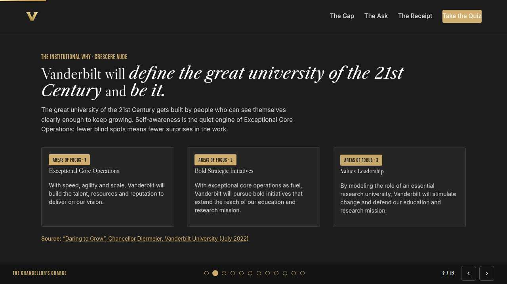
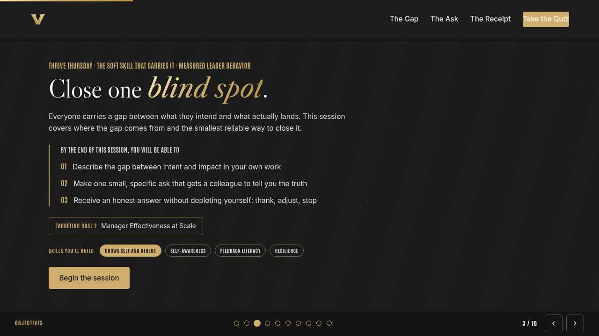
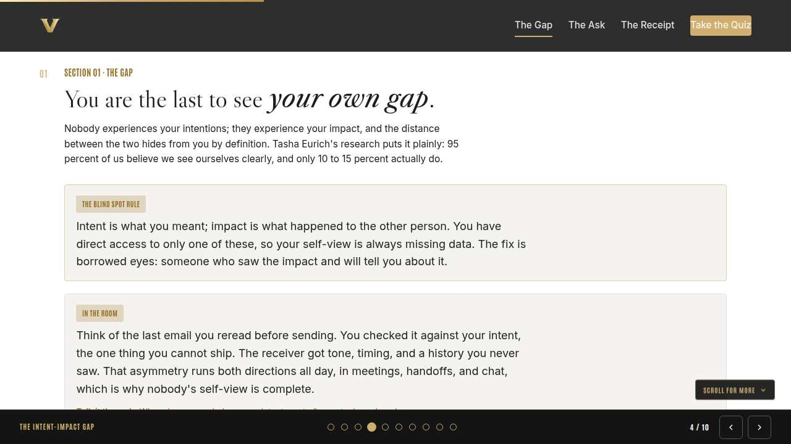
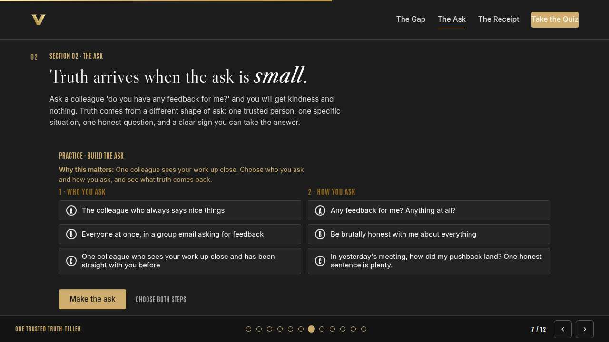
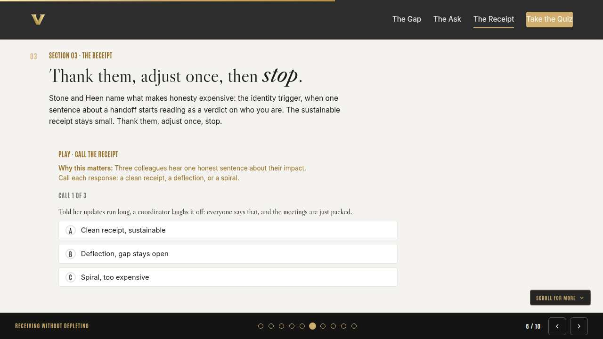
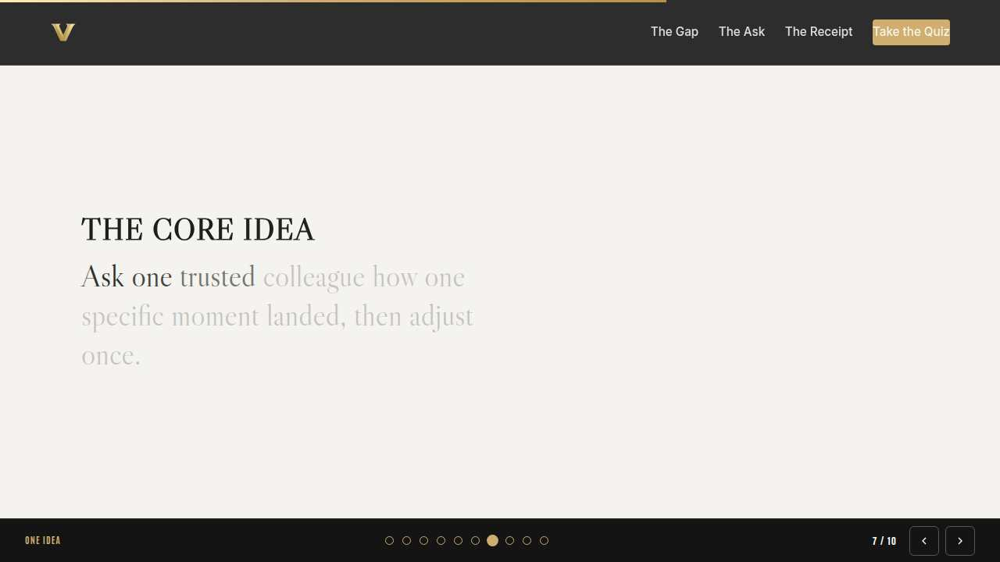
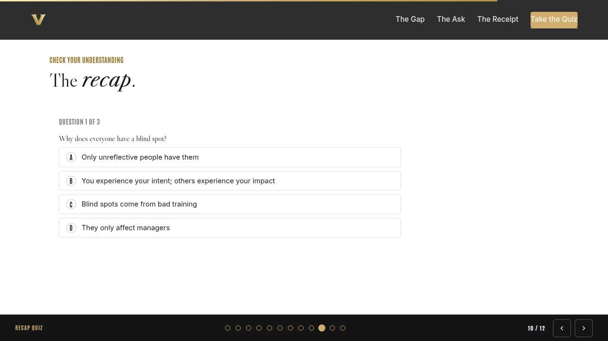
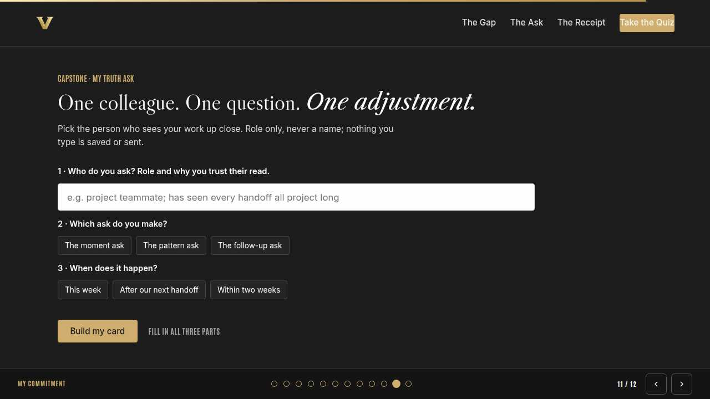
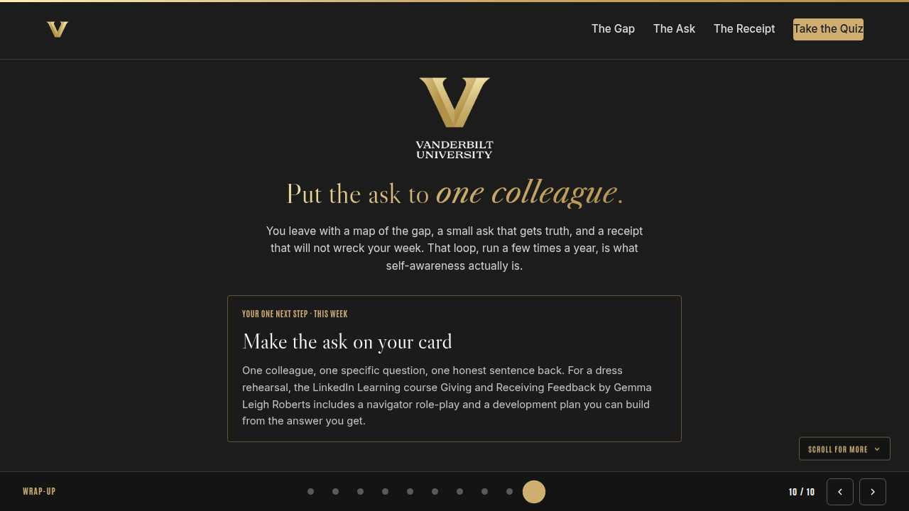

Vanderbilt · Anchor's Edge · ATD facilitator guide · print edition
The Blind Spot, the facilitator guide

Run of show
| Screen | Full (min) | Core (min) |
|---|---|---|
| Welcome / QR | 2 | 1 |
| Why we're here | 2 | 1 |
| Objectives | 2 | 1 |
| The intent-impact gap | 9 | 6 |
| One trusted truth-teller | 11 | 8 |
| Receiving without depleting | 9 | 6 |
| The core idea | 1 | skip |
| Recap quiz | 4 | 3 |
| Capstone commitment | 4 | 3 |
| Closing | 1 | 1 |
| Total | 45 | 30 |
The goal this month serves
Goal 2, Manager Effectiveness at Scale.
Audience
All Vanderbilt staff in the Anchor's Edge weekly rhythm; many attendees manage nobody, so examples stay on a person's own work and collaborations. Works for 6 to 40 on a call; breakouts run in pairs. No prerequisites.
Room setup
Virtual, instructor led: camera on, deck link in chat, breakouts of 2 available. Learners follow on their own screens via the welcome-slide link or QR. Nothing typed into the deck is saved or sent.
Materials
- Meeting platform with screen share and breakout rooms; deck link ready to paste in chat
- Facilitator machine with the facilitator edition open; notifications off
- Learners on their own devices with the learner link
- Chat open for share-outs; the capstone copy button pastes there cleanly
A week before
- Run the learner edition start to finish and do every interaction honestly; you will demo at least one live.
- Read this month's theme page on the Anchor's Edge dashboard so the goal tie-in is fluent.
- Send the invite with the learner link and one line on what to bring.
The day before
- Test screen share with the facilitator edition; confirm the notes rail is readable.
- Open the learner link on a second device; the QR must land there.
- Run the section interactions once so you can drive them without reading.
30 minutes before
- Welcome slide up as people join; link pasted in chat.
- Close every other tab; silence the machine.
- Breakout rooms pre-configured in pairs.
When things go sideways
If Screen share or the site fails mid-session: Paste the learner link in chat and narrate from your own browser; every interaction runs on learner devices without the share.
If Breakout rooms are unavailable: Run the breakout prompts as 60-second chat storms: everyone types their answer at once, you read the best three aloud.
If Someone names a real colleague while describing feedback that hurt: Protect them warmly and immediately: 'Hold that. Roles, never names.' The skill works on patterns and asks, never on individual reputations in a group call.
If A learner shares something raw and the room goes heavy: Honor it briefly, thank them for the trust, and offer a follow-up after the session. Then return the room to the skill; depth belongs in a 1:1, and the session keeps its pace.
Tough questions, ready answers
Q: What if the honest answer I get is wrong about me?
It can be, and it is still data: it is how you landed for that person in that moment. You owe it a weighing, never an overhaul. Keep the fraction that rings true, and remember one report of impact is one angle, never a census.
Q: Isn't asking for feedback like this just fishing for compliments?
The shape prevents that. A compliment-fisher asks vague questions in public; this ask is private, specific, and explicitly invites the uncomfortable answer. Colleagues can tell the difference immediately, and they respect the real version.
Q: I'm not a manager, so isn't this month's measurement about other people?
The measurement applies to managers; the muscle applies to everyone. Careers at every level run on impact, and people who can collect honest signal about theirs grow faster, whatever their title. Your blind spot does not care about your org chart.
Copy-paste templates
Pre-work invite (paste into the calendar invite)
Subject: Thursday, 45 minutes on your blind spot. Everyone has a gap between what they intend and what lands; this session is the smallest reliable way to close yours. Nothing personal shared aloud. Live and interactive; have the session link open on your own screen.
7-day pulse (send one week after)
Subject: Did the ask happen? Three lines, reply whenever: 1) Did the truth ask on your card happen? 2) What did your colleague see that you could not? 3) What one adjustment did you make?
After the session
Seven days out, send the pulse: 'Did the ask on your card happen? What did your colleague see that you could not? What one adjustment did you make?' Count of completed asks is the Level 3 signal for the month.
Welcome / QR Full 2 min · Core 1
Get everyone into the deck on their own screen and set the tone: 45 minutes, live, hands on.
Say
“Welcome to Thrive Thursday. Scan the code or click the link in chat so this session runs on your screen too. Forty-five minutes, one focus: Self-awareness: closing your blind spots.”
Do
- Slide up as people join; link pasted in chat every few minutes.
- State the norm once: type into your own screen, nothing you enter is saved or sent.
Watch for: People lurking without the deck open. The interactions only land if the deck is on their screen.
Transition: “Before the topic, thirty seconds on why Vanderbilt is asking for this hour.”

Why we're here Full 2 min · Core 1
Anchor the session in the Chancellor's charge and name the goal this month serves, inside one minute.
Say
“One sentence from the Chancellor sits over everything we do: Vanderbilt will define the great university of the 21st Century and be it. The great university of the 21st Century gets built by people who can see themselves clearly, and fewer blind spots means fewer surprises in Exceptional Core Operations. This month serves Goal 2, Manager Effectiveness at Scale.”
Do
- Read the mission line slowly, once; name the goal, once.
- No discussion here; the whole slide is under a minute.
Transition: “Here is what you will be able to do in 45 minutes.”

Objectives Full 2 min · Core 1
Set the contract for the session in about a minute; this slide is also the roadmap.
Say
“By the end of this session you will be able to: describe the gap between intent and impact in your own work; make one small, specific ask that gets a colleague to tell you the truth; receive an honest answer without depleting yourself: thank, adjust, stop. We take them in order, and each one has something to practice.”
Do
- Read the three objectives briskly; they double as the agenda.
- Point at the goal chip once, then move.
Transition: “First objective.”

The intent-impact gap Full 9 min · Core 6
Establish that everyone has a gap between intent and impact, invisible from the inside by definition.
Say
“Quick thought experiment. Think of the last time someone misread you: your email sounded curt, your question sounded like criticism, your quiet sounded like disapproval. You knew your intent perfectly, and you never felt the impact at all. That asymmetry is the blind spot, and everyone in this room has one, including me. The only unusual people are the ones who know roughly where theirs is.”
Do
- Read the lead once, then walk the concept card and the In the room card together; no quiz in the live room.
- Lead the discussion prompt aloud and take two or three voices on where intent gets misread.
- Run the breakout on words that landed differently than meant.
Ask
“Why does more self-reflection alone fail to find the blind spot?”
Expect:
- You just replay your own intent
- You end up grading your own homework
Respond: Exactly. Reflection replays the only footage you have, and it is footage of the intent. The impact was filmed from other people's seats.
Debrief: You hold the intent; others hold the impact. Closing the gap requires at least one borrowed pair of eyes.
Watch for: Learners treating blind spots as character flaws. Reframe: a blind spot is missing information, and information is fixable.
Transition: “So the data lives in other people. Next: how to actually get it out of them.”
Core path: Core: skip the breakout; take one example in chat instead.

One trusted truth-teller Full 11 min · Core 8
Teach the small, specific ask that makes honesty cheap enough for a colleague to give.
Say
“Here is why most of us have gotten so little useful feedback in our careers: the asks were too big. 'Any feedback for me?' asks a colleague to gamble the relationship on an essay. The ask that works is small: one trusted person who has seen your work, one specific moment, one honest sentence with permission to be brief. Tasha Eurich calls the right person a loving critic, someone who will tell you the truth and wants you to win. You are making truth cheap for that person to give, and that is the entire trick.”
Do
- Run Build the ask; two minutes to make both choices and run it.
- Ask one volunteer to read their outcome aloud, weak or strong.
- Name the pattern: witnessed impact, small scope, permission to be brief.
Ask
“What makes 'be brutally honest with me' fail?”
Expect:
- It is too big to answer
- Nobody quite believes you mean it
Respond: Both. Brutal invitations still get soft answers because the job is impossible. Shrink the ask and the honesty shows up on its own.
Debrief: Truth-tellers need two credentials: they saw the impact, and they have been straight with you before. The ask needs one moment and permission to be brief.
Watch for: Learners choosing their closest work friend by default. Warmth is lovely; the credential is honesty plus proximity to the work.
Transition: “The ask will work. Which means you are about to hear something true, so let us prepare the landing.”
Core path: Core: everyone runs the builder solo; skip the read-aloud.

Receiving without depleting Full 9 min · Core 6
Install the clean receipt: one thank you, one adjustment, a full stop, so asking stays affordable.
Say
“Last piece, and it is the one that keeps the loop alive. The reason most of us quietly stop asking for truth is that hearing it costs too much. Stone and Heen, in Thanks for the Feedback, call the expensive part the identity trigger: a comment about one handoff starts to feel like a ruling on who you are. The clean receipt is deliberately small. Thank them once, because they took a risk for you. Make one adjustment, because that is what the sentence was for. Then full stop. If the receipt is cheap, you will ask again, and asking again is the whole game.”
Do
- Run Call the receipt live on learner screens.
- After round three, pause on the spiral: ask why over-absorbing feels virtuous.
- Run the breakout on spirals and full stops.
Ask
“Why does the spiral feel like taking feedback seriously?”
Expect:
- Suffering feels like accountability
- It proves we care about the work
Respond: Right, and it is counterfeit accountability. The colleague offered one adjustment; the spiral delivers a crisis instead and quietly punishes them for honesty.
Debrief: Deflection underpays for truth, the spiral overpays, and the clean receipt pays exactly what it costs: thanks, one adjustment, done.
Watch for: Anyone processing real, raw feedback live. Offer the frame gently and follow up after; the room stays a skills session.
Transition: “Quick recap, then you build your ask.”
Core path: Core: run the trainer, skip the breakout, take one voice on the debrief question.

The core idea Full 1 min · Core skip
Land the one sentence the session exists to install.
Say
“If you keep one sentence from today, this is it. Read it once, out loud: Ask one trusted colleague how one specific moment landed, then adjust once.”
Do
- Pause two beats after reading; the word animation carries it.
Transition: “The recap makes it stick.”
Core path: Core: pass through in stride; the sentence reads itself.

Recap quiz Full 4 min · Core 3
Score the learning while it is fresh; wrong answers are teaching moments, not failures.
Say
“Three questions, on your own screen. Answer honestly; the explanations are where the learning sticks.”
Do
- Give the room 90 seconds to run it individually.
- Ask for a show of results in chat: how many got 3 of 3?
- Read out the explanation for whichever question drew the most misses.
Watch for: Rushing past the why lines. The explanations carry the teaching.
Transition: “Now point it at your real week.”

Capstone commitment Full 4 min · Core 3
Convert the session into one named, dated action per person.
Say
“Now make it real. One colleague who sees your work, role only. One specific ask, one window. Build the card and copy it somewhere you will see it before Friday. The wince is the price; the clear look at your own work is what it buys. Take the full two minutes.”
Do
- Two quiet minutes; everyone builds their own card.
- Invite two or three volunteers to read their card aloud or paste it in chat.
- Remind: copy the card somewhere you will see it this week.
Watch for: Vague entries. Nudge for a name-able situation and a real date.
Transition: “Last slide.”

Closing Full 1 min · Core 1
End with the next step and where this thread continues.
Say
“That closes the week. Monday made the manager standard readable, Tuesday opened the feedback tooling, and today gave you the loop that turns all of it into growth: ask small, hear it clean, adjust once. If you want a rehearsal before your ask, this month's LinkedIn Learning course, Giving and Receiving Feedback with Gemma Leigh Roberts, runs a navigator-led role-play and helps you build a development plan from what you hear. Next week opens June and From Insight to Action, where we turn to AI and the future of your own work. Bring your card's one line with you.”
Do
- Point at the next-step card; one sentence.
- Name the rest of the week's rhythm: the other sessions echo this month's theme.
Generated from facilitator/notes.json. The on-screen facilitator edition lives at ./ alongside this guide.